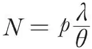
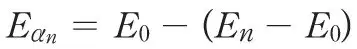
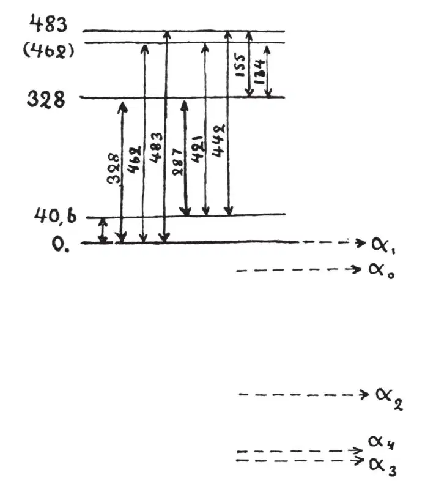

中文
中文G. Gamow
Editor’s Note
George Gamow was a Russian scientist who left the Soviet Union in 1932 and worked at several Western European universities until moving to the United States before the Second World War. He made a powerful impression by his versatility as a scientist, his capacity to write clearly for the general public and his engagement in public causes such as advocacy of building nuclear weapons in the United States. This brief letter offers an explanation of why γ-rays emitted by radioactive atoms may have a variety of energies. 中文
IT is usually assumed that the long range α-particles observed in C'-products of radioactive series correspond to different quantum levels of the α-particle in the nucleus. If after the preceding β-disintegration the nucleus is left in an excited state with the α-particle on one of the levels of higher energy, one of the two following processes can take place: either the α-particle will cross the potential barrier surrounding the nucleus and will fly away with the total energy of the excited level (long range α-particle), or it will fall down to the lowest level, emitting the rest of its energy in the form of electromagnetic radiation (γ-rays), and will later fly away as an ordinary α-particle of the element in question. Thus there must exist a correspondence between the different long range α-particles and the γ-rays of the preceding radioactive body. If p is the relative number of nuclei in the excited state, λ the corresponding decay constant, and θ the probability of transition of the nucleus from the excited state to one of the states of lower energy with emission of energy (in form of γ-quanta or an electron from the electronic shells of the atom), the relative number of long range α-particles must be

. Knowing the number of α-particles in each long range group and calculating, from the wave mechanical theory of radioactive disintegration, the corresponding values of λ, we can estimate for each group the value θ/p, giving a lower limit for the probability of γ-emission. For example, for thorium-C' possessing besides the ordinary α-particles also two groups of long range α-particles, we have for transition probabilities from two excited states to the normal state θ1< 0.4 × 1012 sec–1 and θ2< 2 × 1012 sec–1, which is the right order of magnitude for the emission of light quanta of these energies. With decreasing energy λ decreases much more rapidly (exponentially) than θ, so that the number of long range α-particles from the lower excited levels will be very small. (From this point of view we can also easily understand why the long range α-particles were observed only for C'-products for which the energy of normal α-particles is already much greater than for any other known radioactive element.) 中文
A difficulty arises with the recent experiments of S. Rosenblum (C. R., p. 1,549; 1929; p. 1,124; 1930), who found that the α-rays of thorium-C consist of five different groups lying very close together. The energy differences and intensities of the different groups relative to the strongest one (α0) are, according to Rosenblum:
Eα1 - Eα0 = +40.6 kv Iα1 = 0.3
Eα2 - Eα0 = -287 … Iα2 = 0.03
Eα3 - Eα0 = -442 … Iα3 = 0.02
Eα4 - Eα0 = -421 … Iα4 = 0.005
If we suppose that these groups are due to α-particles escaping from different excited quantum levels in the nucleus, we meet with very serious difficulties. The decay constant λ for the energy of thorium-C fine structure particles is very small (λ ~ 10–2 sec–1), and in order to explain the relatively great number of particles in different groups we must assume also very small transition probabilities. We must assume that thorium-C nucleus can stay in an excited state without emission of energy for a period of half an hour! 中文
We can, however, obtain the explanation of these groups by assuming that we have here a process quite different from the emission of long range α-particles. Suppose that two (or more) α-particles stay on the normal level of the thorium-C nucleus. It can happen that after one of the α-particles has escaped the nucleus will remain in an excited state with the other particle on a certain level of higher energy. (In this case the energy of the escaping α-particle will be smaller than the normal level and obviously will not correspond to any quantum level inside the nucleus.) From the excited state the nucleus (thorium-C" now) can afterwards jump down to the normal level, emitting the energy difference in form of a γ-quantum. 中文
Thus the relative number of different groups will not depend on the probability of γ-emission but only on the transition integral:
W = ʃ f(r1,2)ψE0(α1)ψE0(α2)ψEn(α1)ψEαn(α2)dv1dv2
where f(r) is the interaction energy of two α-particles at a distance r apart, ψE0 and ψEn the eigenfunctions of an α-particle in the normal and nth excited states, and ψEα the eigenfunction of an escaping α-particle with the energy:

. 中文
According to this scheme, the γ-rays corresponding to different fine structure groups of thorium-C must be observed as γ-rays of thorium-C (ejecting electrons from K, L, M, … shells of the thorium-C"-atom) and not as the rays of thorium-B, as we would expect in the case of long range particle explanation. The level scheme of the thorium-C"-nucleus as given by fine structure energies is represented in Fig. 1. 中文

Fig. 1 中文
In the observed γ-ray spectra of thorium-C + C" (Black, Proc. Roy. Soc., pp. 109–166; 1925) we can find lines with the energies: 40.8; 163.3; 279.4; 345.8; 439.0; 478.8; 144.6 kv fitting nicely with the energy differences in Fig. 1. 中文
Thus we see that the fine structure group of highest energy corresponds to the normal level of the nucleus, while the other groups are due to the ordinary α-particles which have lost part of their energy, leaving the nucleus in an excited state. 中文
I am glad to express my thanks to Dr. R. Peierls and Dr. L. Rosenfeld for the opportunity to work here. 中文
(126, 397; 1930)
G. Gamow: Piz da Daint, Switzerland, July 25.